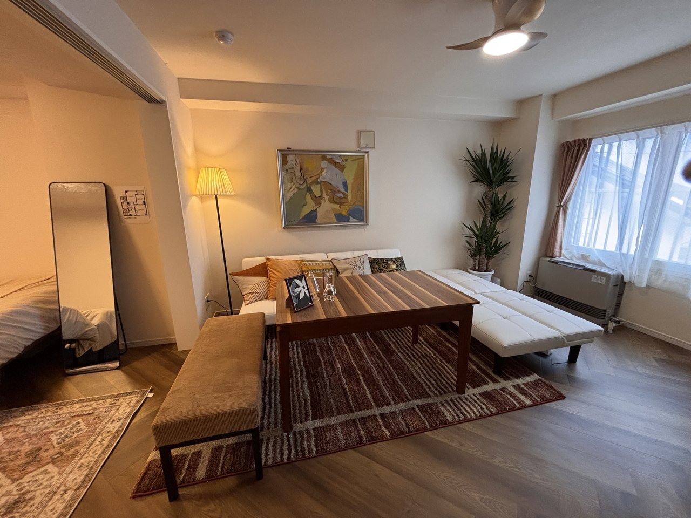
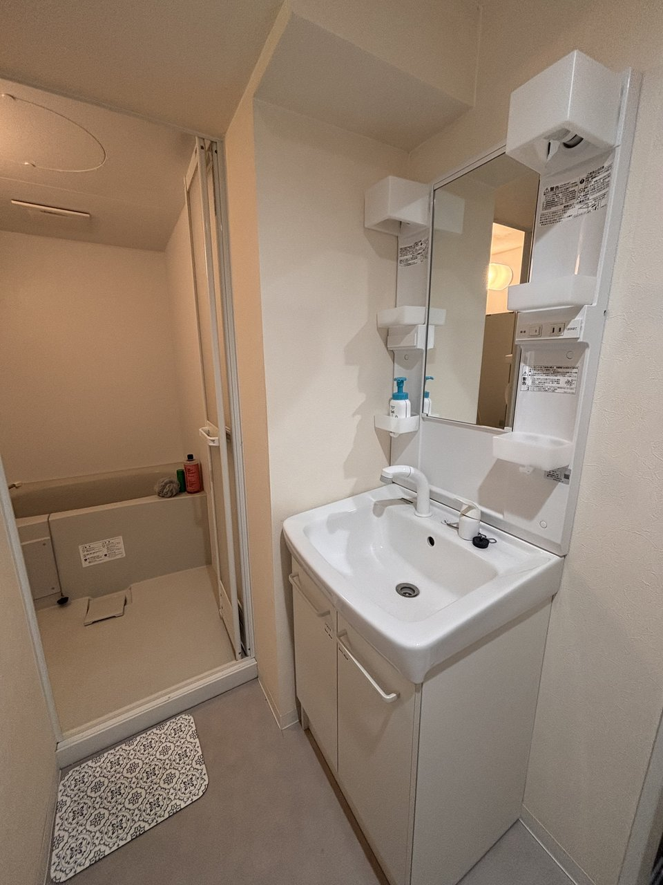
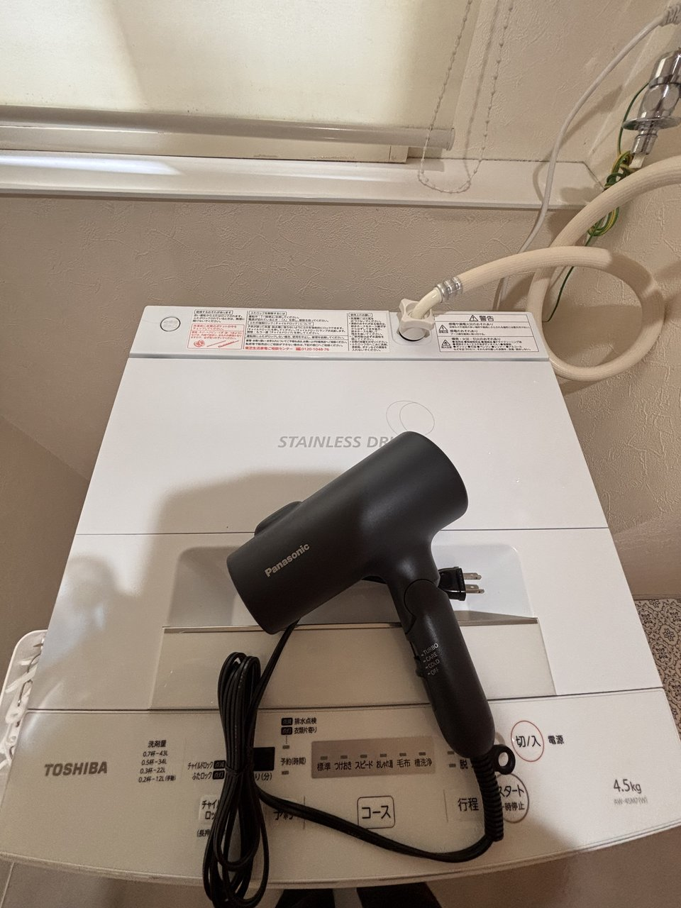
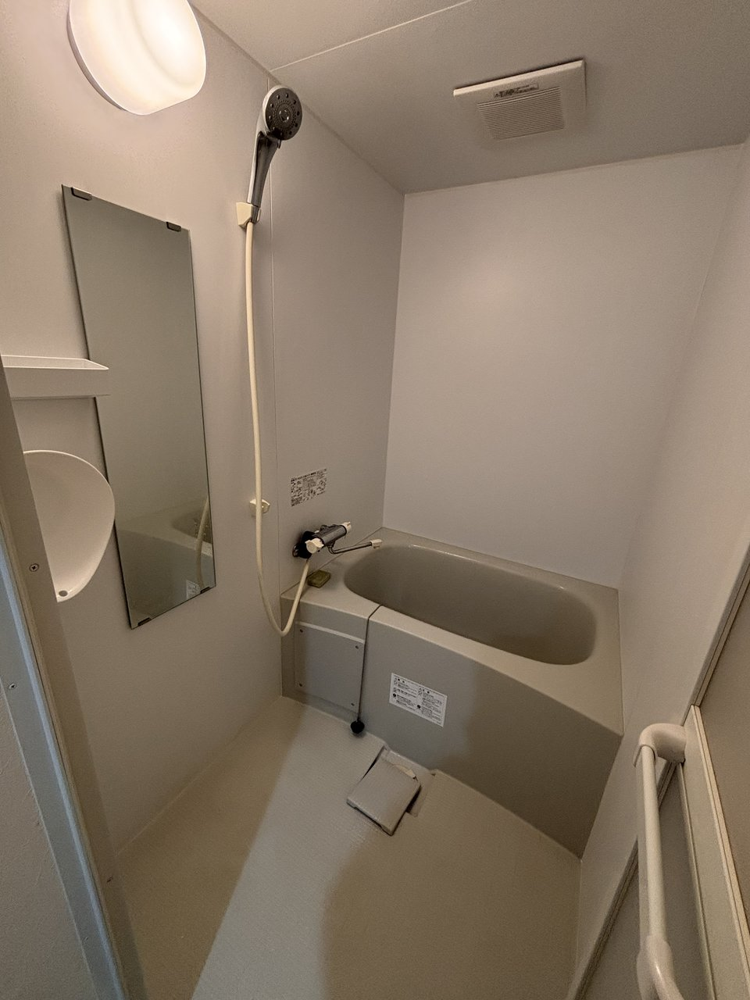
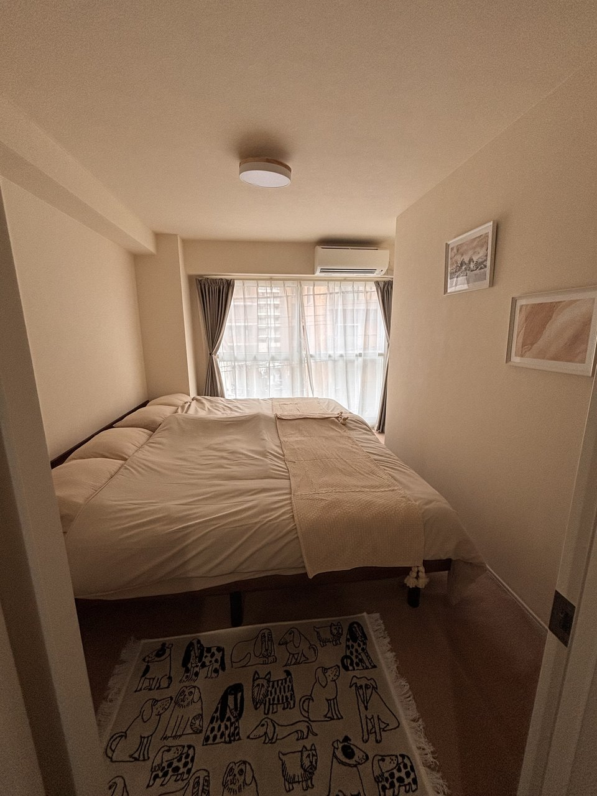

Reservation
空室確認・予約
予約機能はBeds24を利用します。この仮エリアはWordPress実装時にBeds24公式プラグイン、または埋め込みコードへ差し替えます。
Beds24 Widget Area
シマエナガ札幌専用の空室検索を設置
Introduction
大通公園周辺を拠点に、札幌を暮らすように楽しむ。
札幌中心部にアクセスしやすい、ワンフロア貸切の2LDK。広いリビングとダイニングを備え、ファミリー、カップル、長期滞在にも向いています。
キッチンツール、洗濯機、冷蔵庫、ドライヤー、シャンプー類など、滞在に必要な備品を掲載し、予約前の不安を減らします。
Gallery
写真ギャラリー
正式写真を受け取ったら、同じファイル名で差し替えるだけでページに反映できます。





Amenities
設備・アメニティ
居住空間
約70㎡の2LDK、リビング、ダイニング、複数名で過ごしやすい間取り。
キッチン
冷蔵庫、キッチンツール、調理器具、長期滞在に必要な基本設備。
生活設備
洗濯機、ドライヤー、タオル、シャンプー、リンス、ボディソープ。
周辺利便
コンビニ、スーパー、ドラッグストアが徒歩圏内。長めの滞在にも便利です。
Access
アクセス
所在地：北海道札幌市中央区南1条西15丁目周辺
交通：札幌市電「西15丁目」駅から徒歩約3分。大通公園まで徒歩圏内。
Google Map埋め込み予定エリア
Around
周辺観光
大通公園
季節のイベントや散策を楽しめる札幌中心部の代表的スポット。
札幌市電エリア
街歩き、カフェ、飲食店巡りに便利なアクセス環境です。
狸小路・すすきの
食事、買い物、夜の札幌観光にも出かけやすい立地です。
FAQ
よくある質問
予約はどこで行いますか？
公式サイト上のBeds24予約ボタン、または空室検索ウィジェットから予約できる想定です。
長期滞在に向いていますか？
キッチン、洗濯機、生活備品を掲載し、長期滞在の判断ができるページ構成にします。
最大何名まで泊まれますか？
最大6名想定です。正式な受け入れ人数はBeds24側の在庫・料金設定と合わせます。